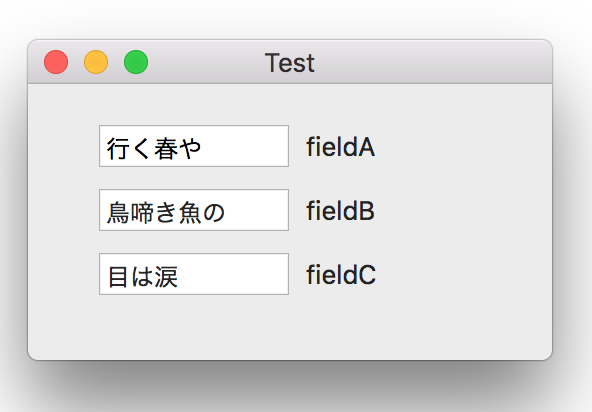

キーバリューコーディング（KVC）の実例

テキストフィールドの初期値に plistから読み込んだ値を設定する。キーバリューコーディングを利用すれば、ディクショナリのキーとテキストフィールドのプロパティ名を同じにすることでプロパティ名をハードコーディングすることなく値の設定が可能となる。テキストフィールドが多数あれば、コーディングは楽になりそう。
ポイントは、NSTextFieldといったcocoaのクラスのプロパティもキーバリューコーディングの対象になるということ。
プロパティ（テキストフィールド）
テキストフィールドにデータを設定する
テキストフィールドからデータを取り出す
存在しないプロパティ名（forKey）で値を読み込もうとすると例外が発生する。それを回避するために例外が発生したときに呼ばれる次のメソッドを実装しておく。（言い換えればこのメソッドが実装されていないから例外が発生する）